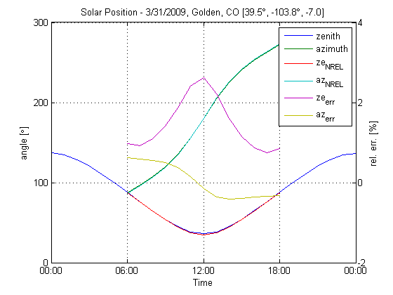

Contents
initalize workspace
clear('all'),close('all'),clc
Solar Position Calculator Examples
This example uses datefig from the file exchange and a mex version of NREL's C/C++ source for SOLPOS.
% The following examples show different uses of datetime and DST for % Golden, Colorado. lat = 39.5; % [arc-degrees] latitude long = -103.8; % [arc-degrees] longitude TZ = -7; % [hrs] offset from UTC, during standard time rot = 0; % [arc-degrees] rotation clockwise from north
Datetime as cell array in local time during DayLight Savings Time
% cell array of local date-times during DST datetimes = {'3/31/2009 10:00 AM','3/31/2009 11:00 AM'}; DST = true; % local time is daylight savings time % calculate solar position a = solarPosition(datetimes,lat,long,TZ,rot,DST); % [arc-degrees] % compare to NREL SOLPOS calculator http://www.nrel.gov/midc/solpos/ a_nrel = a; for n = 1:size(a,1) dt_nrel = datevec(datetimes{n});dt_nrel(:,4) = dt_nrel(:,4)-DST; [a_nrel(n,:),~] = solpos([lat,long,TZ],dt_nrel,[1013,25]); night = a_nrel(:,1)>90;a_nrel(night,:) = NaN(sum(night),2); end fprintf('%-20s %-3s %-7s %-8s %-7s %-8s %-7s %-8s\n','date/time','DST', ... 'Zenith','Azimuth','Ze_NREL','Az_NREL','Ze_Err %','Az_Err %') fprintf('%-20s|%-3s|%-7s|%-8s|%-7s|%-8s|%-7s|%-8s|\n',repmat('-',1,20), ... '---','-------','--------','-------','--------','-------','--------') for n = 1:size(a,1) fprintf('%20s %-3s %7.4f %8.4f %7.4f %8.4f %7.4f %8.4f\n',datetimes{n}, ... DST*'yes'+~DST*'no ',a(n,1),a(n,2),a_nrel(n,1),a_nrel(n,2), ... 100*(a(n,1)-a_nrel(n,1))./a_nrel(n,1), ... 100*(a(n,2)-a_nrel(n,2))./a_nrel(n,2)) end fprintf('%-20s|%-3s|%-7s|%-8s|%-7s|%-8s|%-7s|%-8s|\n',repmat('-',1,20), ... '---','-------','--------','-------','--------','-------','--------') fprintf('\n')
date/time DST Zenith Azimuth Ze_NREL Az_NREL Ze_Err % Az_Err % --------------------|---|-------|--------|-------|--------|-------|--------| 3/31/2009 10:00 AM yes 54.2704 119.6703 53.5152 119.0853 1.4112 0.4913 3/31/2009 11:00 AM yes 45.0687 135.2357 44.2388 134.7306 1.8758 0.3748 --------------------|---|-------|--------|-------|--------|-------|--------|
Datetime as matrix of date-vectors with DST removed.
% array of standard date-times, DST removed datetimes = [2009,3,31,9,0,0;2009,3,31,10,0,0]; DST = false; % daylight savings time has been removed % calculate solar position a = solarPosition(datetimes,lat,long,TZ,rot,DST); % [arc-degrees] % compare to NREL SOLPOS calculator http://www.nrel.gov/midc/solpos/ a_nrel = a; for n = 1:size(a,1) dt_nrel = datetimes(n,:);dt_nrel(:,4) = dt_nrel(:,4)-DST; [a_nrel(n,:),~] = solpos([lat,long,TZ],dt_nrel,[1013,25]); night = a_nrel(:,1)>90;a_nrel(night,:) = NaN(sum(night),2); end fprintf('%-20s %-3s %-7s %-8s %-7s %-8s %-7s %-8s\n','date/time','DST', ... 'Zenith','Azimuth','Ze_NREL','Az_NREL','Ze_Err %','Az_Err %') fprintf('%-20s|%-3s|%-7s|%-8s|%-7s|%-8s|%-7s|%-8s|\n',repmat('-',1,20), ... '---','-------','--------','-------','--------','-------','--------') for n = 1:size(a,1) fprintf('%20s %-3s %7.4f %8.4f %7.4f %8.4f %7.4f %8.4f\n', ... datestr(datetimes(n,:)),DST*'yes'+~DST*'no ',a(n,1),a(n,2), ... a_nrel(n,1),a_nrel(n,2),100*(a(n,1)-a_nrel(n,1))./a_nrel(n,1), ... 100*(a(n,2)-a_nrel(n,2))./a_nrel(n,2)) end fprintf('%-20s|%-3s|%-7s|%-8s|%-7s|%-8s|%-7s|%-8s|\n',repmat('-',1,20), ... '---','-------','--------','-------','--------','-------','--------') fprintf('\n')
date/time DST Zenith Azimuth Ze_NREL Az_NREL Ze_Err % Az_Err % --------------------|---|-------|--------|-------|--------|-------|--------| 31-Mar-2009 09:00:00 no 54.2704 119.6703 53.5152 119.0853 1.4112 0.4913 31-Mar-2009 10:00:00 no 45.0687 135.2357 44.2388 134.7306 1.8758 0.3748 --------------------|---|-------|--------|-------|--------|-------|--------|
Datetime as vector of date-numbers with DST removed for plotting zenith & azimuth
% linear sequence of `datenum` for one day at hourly intervals datetimes = linspace(datenum([2009,3,31]),datenum([2009,4,1]),25); % [days] DST = false; % daylight savings time has been removed % calculate solar position a = solarPosition(datetimes,lat,long,TZ,rot,DST); % [arc-degrees] % compare to NREL SOLPOS calculator http://www.nrel.gov/midc/solpos/ a_nrel = a; for n = 1:size(a,1) dt_nrel = datevec(datetimes(n));dt_nrel(:,4) = dt_nrel(:,4)-DST; [a_nrel(n,:),~] = solpos([lat,long,TZ],dt_nrel,[1013,25]); night = a_nrel(:,1)>90;a_nrel(night,:) = NaN(sum(night),2); end ax = datefig.plotyy(datetimes,[a,a_nrel], ... datetimes,(a-a_nrel)./a_nrel*100); title('Solar Position - 3/31/2009, Golden, CO [39.5\circ, -103.8\circ, -7.0]') ylabel(ax(1),'angle [\circ]') ylabel(ax(2),'rel. err. [%]') legend('zenith','azimuth','ze_{NREL}','az_{NREL}','ze_{err}','az_{err}')
Errors
Comparison of the solar position calculator with NREL's SOLPOS, shows good overall agreement. NREL's SOLPOS considers atmospheric refraction in the calculation of zenith, which accounts for some error in this solar calculator. Max relative error in zenith, including the error due to refraction is near than 2%. Error in azimuth is near zero.